Wstęp
W ramach tego projektu nauczysz się jak stworzyć grę, w której używa się myszki do pokierowania łodzią w kierunku wyspy.
Krok 1: Przygotowania
Zadania do wykonania
Otwórz projekt Scratch o nazwie 'Wyścig Łodzi'. Możesz go znaleźć na stronie jumpto.cc/boat-go albo pobrać go na swój komputer ze strony jumpto.cc/boat-get.
Projekt zawiera duszka łodzi i tło z trasą, zawierającą:
- Drewniane przeszkody, które łódź musi omijać
- Piaszczystą wyspę, do której łódź musi dopłynąć
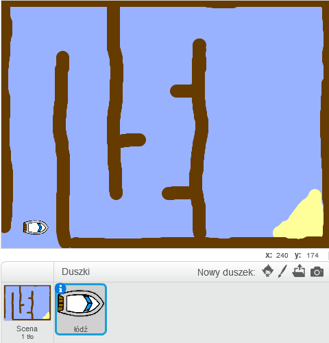
Zapisz swój projekt
Krok 2: Sterowanie łodzią
Zadania do wykonania
Łodzią będziesz sterować za pomocą myszki. Dodaj ten kod do twojej łodzi:
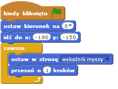
Przetestuj łódź, klikając na zieloną flagę i ruszając myszką. Czy łódź płynie w kierunku wskaźnika?

Uwaga: Obecne Scratch ma błąd, który może powodować, że łódź nie będzie płynąć w stronę wskaźnika. Jeśli to ci się przydarzy, kliknij w strzałkę przy bloku
ustaw w stronęi ponownie wybierz 'wskaźnik myszy'.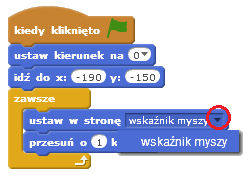
Co się dzieje, kiedy łódź dotyka wskaźnika myszy?
Aby to naprawić, musisz dodać blok
jeżelido swojego kodu. Dzięki temu łódź będzie się poruszała tylko jeśli jest w odległości większej niż 5 pikseli od wskaźnika.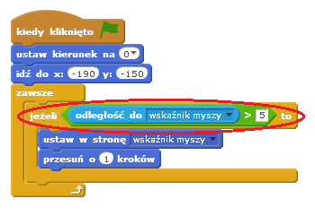
Ponownie przetestuj swoją łódź, żeby sprawdzić, czy problem został rozwiązany.
Zapisz swój projekt
Krok 3: Zderzenia!
Twoja łódź może przepływać przez drewniane bariery. Naprawmy to!
Zadania do wykonania
Potrzebujesz dwóch kostiumów dla swojej łodzi, jeden normalny, drugi przedstawiający łódź po zderzeniu z przeszkodą. Zduplikuj kostium łodzi i nazwij je 'normalny' i 'zniszczony'.
Kliknij na 'zniszczony' kostium i zmień narzędzie na 'Wybierz' aby złapać kawałki łodzi i pomieszać je. Poprzesuwaj je i poprzekręcaj, ale nie zmieniaj ich rozmiarów. Spraw, aby łódź wyglądała na zniszczoną.
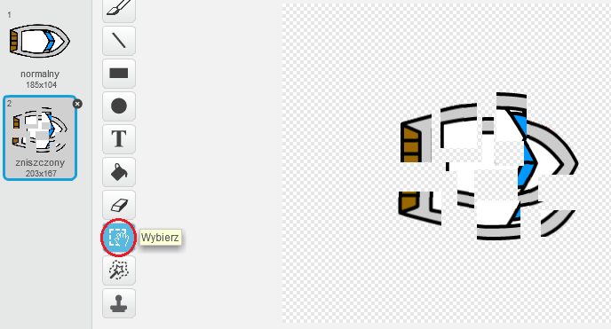
Dodaj poniższy kod do twojej łodzi, wewnątrz pętli
zawsze, żeby rozstrzaskiwała się, jeżeli dotknie drewnianych przeszkód: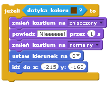
Ten kod jest wewnątrz pętli
zawsze, dzięki czemu ciągle jest sprawdzane, czy łódź się rozbiła.Powinieneś również zadbać o to, aby na początku łódź zawsze wyglądała 'normalnie'.
Jeśli teraz spróbujesz przepłynąć przez drewnianą barierię, powinieneś zauważyć, że łódź się rozbija i wraca na początek trasy.
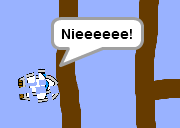
Zapisz swój projekt
Wyzwanie: Zwycięstwo!
Czy potrafisz dodać kolejny blok jeżeli do kodu twojej łodzi tak, aby gracz wygrywał, kiedy dotrze do piaszczystej wyspy?
Kiedy łódź dotrze do wyspy, powinna powiedzieć 'TAK!' i gra powinna się zatrzymać. Będziesz musiał użyć poniższego kodu:
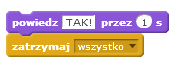
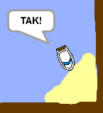
Zapisz swój projekt
Wyzwanie: Dźwięki
Czy potrafisz dodać dźwięki do twojej gry, kiedy łódź się rozbija albo kiedy dociera do wyspy. Możesz nawet dodać muzykę grającą w tle (jeśli potrzebujesz pomocy, przypomnij sobie projekt 'Kapela rockowa').
Zapisz swój projekt
Krok 4: Próba czasowa
Dodajmy stoper do twojej gry po to, aby gracz musiał jak najszybciej dotrzeć do wyspy.
Zadania do wykonania
Dodaj nową zmienną o nazwie
czas. Możesz także zmienić sposób wyświetlania twojej nowej zmiennej. Jeśli potrzebujesz pomocy, podejrzyj projekt 'Pogromcy duchów'.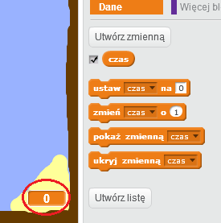
Dodaj poniższy kod do twojej sceny tak, aby stoper odmierzał czas dopóki łódź nie dotrze do wyspy:
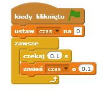
I już! Przetestuj swoją grę i sprawdź jak szybko uda ci się dostać do wyspy!
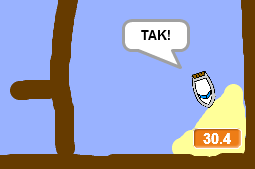
Zapisz swój projekt
Krok 5: Przeszkody i wzmocnienia
Ta gra jest za łatwa - dodajmy kilka elementów, żeby zrobić ją bardziej interesującą.
Zadania do wykonania
Najpierw dodajmy kilka 'przyspieszaczy' do twojej gry, które będą przyspieszać łódź. Zmień tło sceny i dodaj kilka białych strzałek.
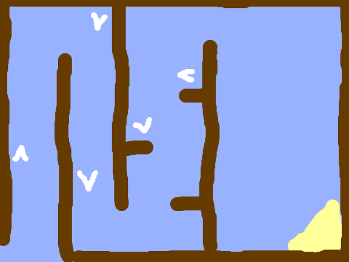
Teraz dodaj poniższy kod do pętli
zawszetwojej łodzi, dzięki czemu łódź przesunie się dodatkowe 3 kroki, kiedy dotknie białego przyspieszacza.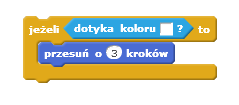
Możesz także dodać obracającą się bramę, którą twoja łódź musi ominąć. Dodaj nowego duszka, nazwij go 'brama', powinien wyglądać mniej więcej tak:
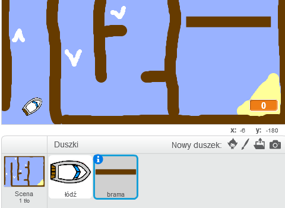
Upewnij się, że kolor bramy jest taki sam, jak kolor przeszkód.
Ustaw środek duszka bramy.
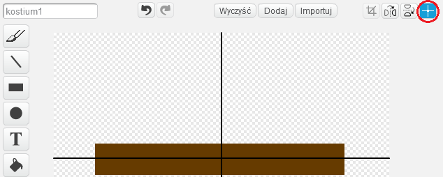
Dodaj kod do twojej bramy, aby
zawszepowoli się obracała.Przetestuj swoją grę. Na mapie powinna się znaleźć obracająca się brama, której trzeba unikać.
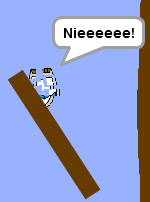
Zapisz swój projekt
Wyzwanie: Więcej przeszkód!
Czy potrafisz dodać więcej przeszkód do twojej gry? Poniżej znajdziesz kilka pomysłów:
Możesz dodać zieloną maź do twojego tła, która będzie spowalniać gracza, kiedy się jej dotknie. Możesz użyć bloku
czekaj, aby to zrobić: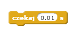

Możesz dodać też poruszające się obiekty, np. kłodę albo rekina!

Te bloki mogą ci w tym pomóc:
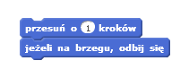
Jeśli twój nowy obiekt nie jest brązowy, będziesz musiał dodać poniższy kod do skryptu łodzi:
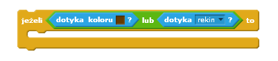
Zapisz swój projekt
Wyzwanie: Więcej łodzi!
Czy potrafisz zmienić swoją grę w wyścig pomiędzy dwoma graczami?
Zduplikuj łódź, nazwij ją 'Gracz 2' i zmień jej wygląd.
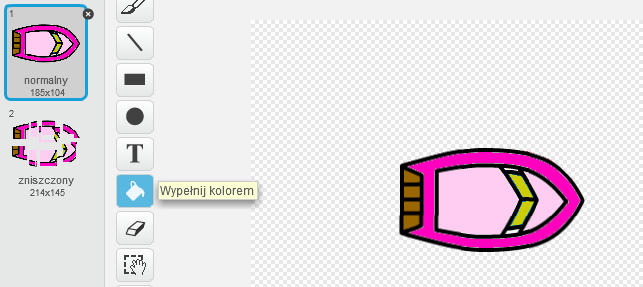
Zmień pozycję startową gracza 2 poprzez zmianę tego kodu:
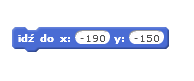
Usuń fragment kodu odpowiedzialny za sterowanie łodzią przez myszkę:
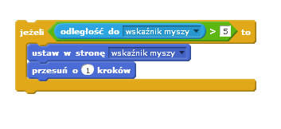
... i zastąp go kodem do sterowania łodzią za pomocą strzałek.
Ten kod będzie ci potrzebny do poruszania się łodzią do przodu:
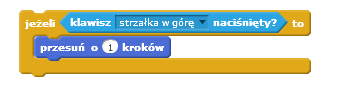
Będziesz również potrzebować kodu, który
obróciłódź, kiedy strzałka w lewo lub w prawo zostanie wciśnięta.
Zapisz swój projekt
Wyzwanie: Więcej poziomów!
Czy potrafisz stworzyć dodatkowe tła i pozwolić graczowi wybierać między poziomami?
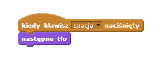